Show the Signal, Hide the Noise: Spectral Forcing for Pixel-Space Diffusion
arXiv 2026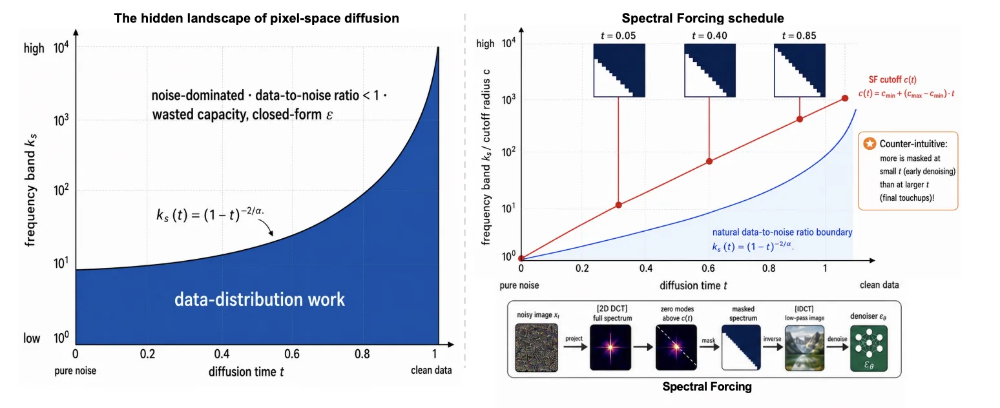
Pixel space, with nowhere for the noise to hide.
I am a Second-year PhD student at MMLab@NTU, Nanyang Technological University, under the supervision of Prof. Ziwei Liu. I earned my Bachelor’s degree from the University of Electronic Science and Technology of China (UESTC) and my Master’s degree from the National University of Singapore (NUS). My research centers on video generation, diffusion models, and robotics.
Bachelor’s — UESTCMaster’s — NUSPhD — NTU (in progress)
weichen002 [at] e.ntu.edu.sg GitHub Google Scholar
What Kind of PhD Are You? Ten questions. Four attributes. Twenty-four answers.
Ordered newest first. Every title below resolves to a source.
Refereed peer-reviewed venue Dashed preprint or technical report

Pixel space, with nowhere for the noise to hide.
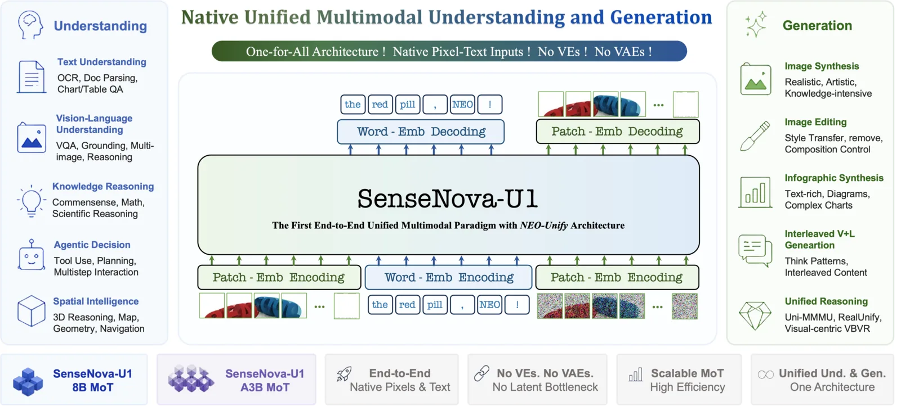
Understanding and generation under one architecture, which is the hard version.
RhetoricTechnical report. Core contributor credit, not first author.
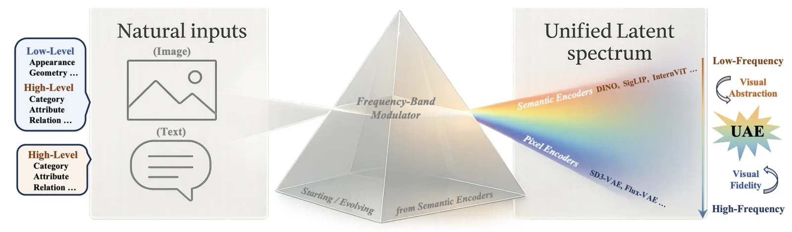
Semantics and pixels held in one autoencoder, stated as a hypothesis rather than a trick.
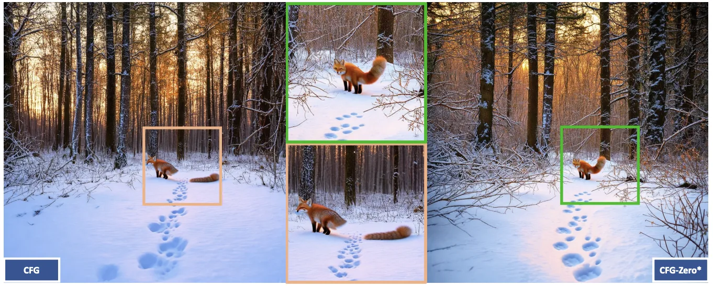
Guidance reconsidered at the zeroth step. The asterisk is load-bearing.
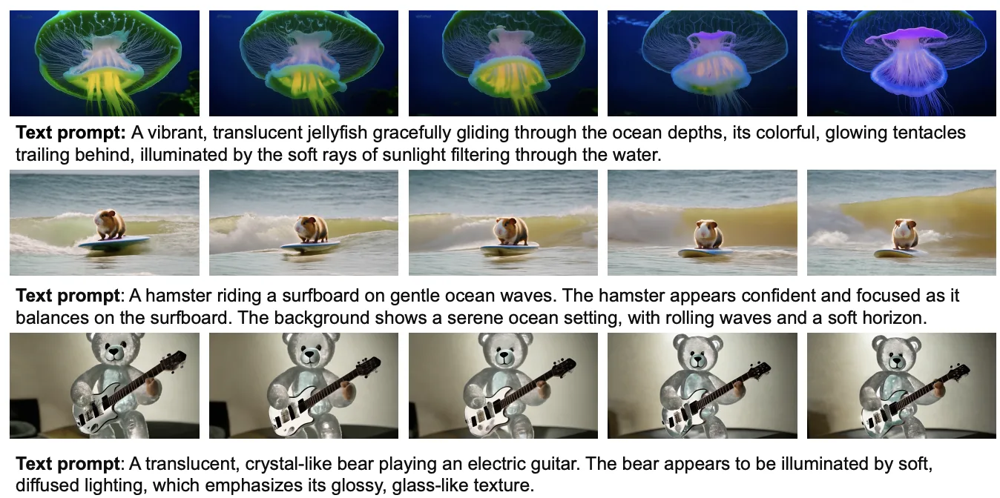
Project Page arXiv Dataset Code
A parallel transformer, scaled up, and the dataset shipped with it.
RhetoricPreprint. Nineteen authors; co-first among them.
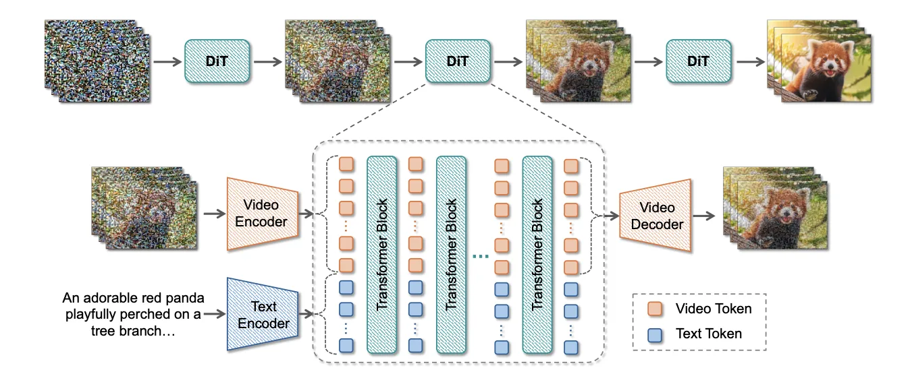
What happens between the layers turned out to be the thing worth rethinking.
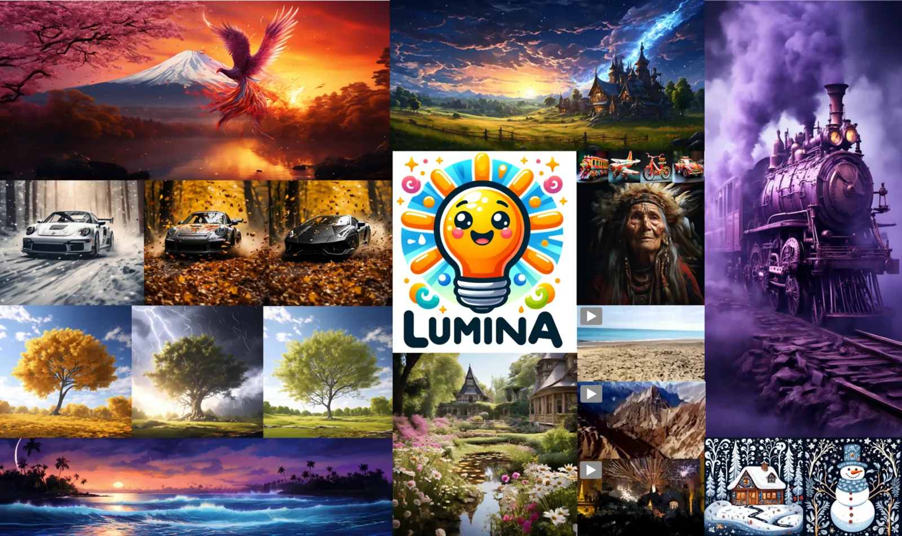
Any modality, any resolution, any duration — an ambitious sentence to defend.
RhetoricTechnical report, not peer reviewed. Contributor credit.
The model is given the link between examples, not only the examples.
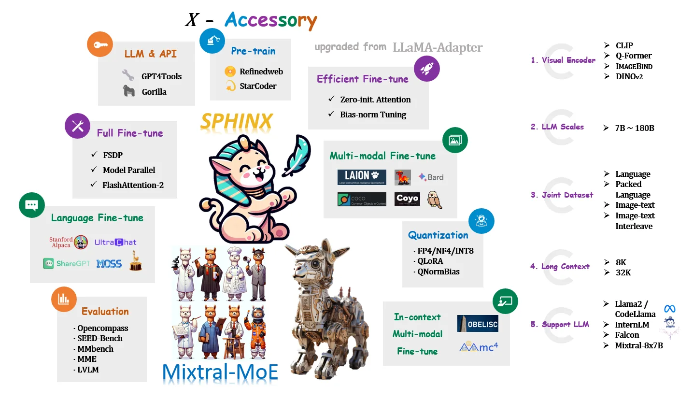
Weights, tasks and visual embeddings, mixed jointly rather than stacked.
RhetoricTechnical report, not peer reviewed. Contributor credit.
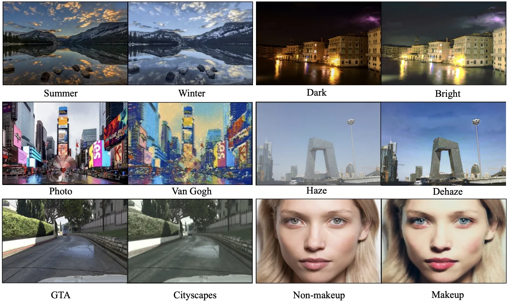
Translation that keeps its fidelity by keeping its hierarchy.
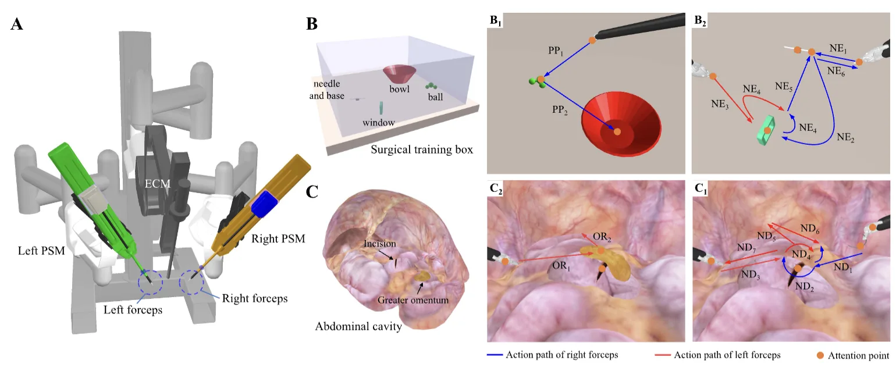
An endoscope that looks where the surgery is going. The robotics start here.
* denotes equal contribution.
Research Manager
Singapore
Research Scientist
Singapore
Computer Vision Researcher
ShangHai
Research Intern
Singapore
The other ledger. It is longer than the first one and it was more fun to write.
3,288.1 hours across 8 titles. 343 of 917 achievements, counted across 7 of the 8.
1,558.4 hours48 of 48 achievements
Fifteen hundred hours of listening for a footstep through a ceiling. You do not hear the room any more. You hear what is about to come through it.
RhetoricSixty-five days. Not of playing across the years — sixty-five entire days, end to end, in one room.
489.5 hours76 of 175 achievements
Dark, Feudal, Castle, Imperial. Four ages and a thousand years, compressed into something you can lose an evening to, and you keep going back to lose another one.
437.5 hours130 of 303 achievements
Something is walking toward you and the sound is getting louder. You have heard it four hundred hours’ worth of times. It still works.
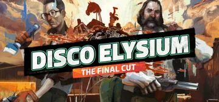
274.0 hours
Two hundred and seventy-four hours in a city you could not fix, losing an argument to yourself in twenty-four voices. You are reading one of them now. This entire room is borrowed from that game, and you knew that before you got here.
250.4 hours37 of 99 achievements
You knew how this one ended before you installed it. Everyone does. Two hundred and fifty hours spent checking whether it would end differently for you.
103.4 hours8 of 50 achievements
Eight achievements out of fifty. You were not collecting anything. You were on a horse, going somewhere, and you did not stop to be measured.
RhetoricYou did not finish going somewhere. You stopped, and then a PhD happened to you.
91.0 hours29 of 54 achievements
Ninety-one hours, and better than half the achievements. Not a fast reader. A thorough one — you stopped and talked to everybody.
83.9 hours15 of 188 achievements
Fifteen of a hundred and eighty-eight. This game keeps score of things nobody sets out to do. The dynasty was the point; the ledger was never going to be filled.
Three records. They will play right here, and they do not load until you ask them to.
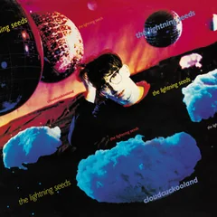
The Lightning SeedsCloudcuckooland
Nineteen ninety, and it still sounds like the first warm afternoon of a year. Nothing in it is trying to hurt you. Do you know how rare that is.
YanniTribute
Not one word in the whole of it, and it still gets the entire story out. Somewhere in there an instrument is pretending to be a bird, and you are letting it.
The 1975Being Funny In A Foreign Language
It wants to be enormous and it is not embarrassed about wanting that. The temperature in the room drops a degree. Play it loud or do not play it.
Arrow keys, or drag.
EncyclopediaSolved. Lamplight is in the masthead from now on.